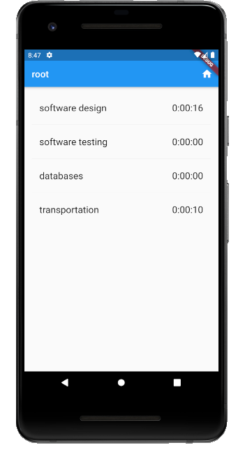

TimeTracker app
2. A view with a static list
First step is to create Dart classes to represent the one-level tree that is shown in both the task/projects screen or the intervals screen. In the first case the root is a project, in the second is a task. A Flutter object to display a screen of projects and tasks will get the data to show from this tree. For the moment we will instantiate a fixed fake tree. Later on, the tree will be the answer to a REST query to the webserver.
Create the data to show
- Launch IntelliJ and create a new Flutter project named
codelab_timetracker. Let the wizard create thelib/main.dartfile for you. - Edit
pubspec.yamlto add a dependency to the intl Dart library. It will allow us to format dates and times.
dependencies:
intl: ^0.16.1
flutter:
sdk: flutter
cupertino_icons: ^0.1.2
- Add a new Dart file to the lib folder named
tree.dartwith the following content:
// see Serializing JSON inside model classes in
// https://flutter.dev/docs/development/data-and-backend/json
import 'package:intl/intl.dart';
import 'dart:convert' as convert;
final DateFormat _dateFormatter = DateFormat("yyyy-MM-dd HH:mm:ss");
abstract class Activity {
int id;
String name;
DateTime initialDate;
DateTime finalDate;
int duration;
List<dynamic> children = List<dynamic>();
Activity.fromJson(Map<String, dynamic> json)
: id = json['id'],
name = json['name'],
initialDate = json['initialDate']==null ? null : _dateFormatter.parse(json['initialDate']),
finalDate = json['finalDate']==null ? null : _dateFormatter.parse(json['finalDate']),
duration = json['duration'];
}
class Project extends Activity {
Project.fromJson(Map<String, dynamic> json) : super.fromJson(json) {
if (json.containsKey('activities')) {
// json has only 1 level because depth=1 or 0 in time_tracker
for (Map<String, dynamic> jsonChild in json['activities']) {
if (jsonChild['class'] == "project") {
children.add(Project.fromJson(jsonChild));
// condition on key avoids infinite recursion
} else if (jsonChild['class'] == "task") {
children.add(Task.fromJson(jsonChild));
} else {
assert(false);
}
}
}
}
}
class Task extends Activity {
bool active;
Task.fromJson(Map<String, dynamic> json) : super.fromJson(json) {
active = json['active'];
for (Map<String, dynamic> jsonChild in json['intervals']) {
children.add(Interval.fromJson(jsonChild));
}
}
}
class Interval {
int id;
DateTime initialDate;
DateTime finalDate;
int duration;
bool active;
Interval.fromJson(Map<String, dynamic> json)
: id = json['id'],
initialDate = json['initialDate']==null ? null : _dateFormatter.parse(json['initialDate']),
finalDate = json['finalDate']==null ? null : _dateFormatter.parse(json['finalDate']),
duration = json['duration'],
active = json['active'];
}
class Tree {
Activity root;
Tree(Map<String, dynamic> dec) {
// 1 level tree, root and children only, root is either Project or Task. If Project
// children are Project or Task, that is, Activity. If root is Task, children are Instance.
if (dec['class'] == "project") {
root = Project.fromJson(dec);
} else if (dec['class'] == "task") {
root = Task.fromJson(dec);
} else {
assert(false);
}
}
}
Tree getTree() {
String strJson = "{"
"\"name\":\"root\", \"class\":\"project\", \"id\":0, \"initialDate\":\"2020-09-22 16:04:56\", \"finalDate\":\"2020-09-22 16:05:22\", \"duration\":26,"
"\"activities\": [ "
"{ \"name\":\"software design\", \"class\":\"project\", \"id\":1, \"initialDate\":\"2020-09-22 16:05:04\", \"finalDate\":\"2020-09-22 16:05:16\", \"duration\":16 },"
"{ \"name\":\"software testing\", \"class\":\"project\", \"id\":2, \"initialDate\": null, \"finalDate\":null, \"duration\":0 },"
"{ \"name\":\"databases\", \"class\":\"project\", \"id\":3, \"finalDate\":null, \"initialDate\":null, \"duration\":0 },"
"{ \"name\":\"transportation\", \"class\":\"task\", \"id\":6, \"active\":false, \"initialDate\":\"2020-09-22 16:04:56\", \"finalDate\":\"2020-09-22 16:05:22\", \"duration\":10, \"intervals\":[] }"
"] "
"}";
Map<String, dynamic> decoded = convert.jsonDecode(strJson);
Tree tree = Tree(decoded);
return tree;
}
testLoadTree() {
Tree tree = getTree();
print("root name ${tree.root.name}, duration ${tree.root.duration}");
for (Activity act in tree.root.children) {
print("child name ${act.name}, duration ${act.duration}");
}
}
void main() {
testLoadTree();
}
- Read the code, it's simple: two classes
ProjectandTaskinherit fromActivityso that we have this as their common type. They contain a named constructorfromJsonthat takes a dictionary (in Dart, aMap<String, dynamic>whose keys are the JSON fields and dynamic means any type) and sets the attributes. If a date-time is not null then we parse the string to obtain aDateTimevalue, a type defined in theintllibrary. In functiongetTree()we instantiate a sample JSON string and decode it producing a JSON object by means of theconvertlibrary. This object is the parameter of theTreeconstructor that is just a wrapper of the root of the 1-level tree, either a project or a task object. - To run this test, Run ⟶ Run... ⟶ Edit configurations... ⟶ + and add a new configuration to the Flutter group with name "test tree" and search file tree.dart for Dart entrypoint.
Create the view to show the data
Open file main.dart and replace its content by this
import 'package:flutter/material.dart';
void main() => runApp(MyApp());
class MyApp extends StatelessWidget {
// This widget is the root of your application.
@override
Widget build(BuildContext context) {
return MaterialApp(
title: 'TimeTracker',
theme: ThemeData(
primarySwatch: Colors.blue,
textTheme: TextTheme(
subhead: TextStyle(fontSize:20.0),
body1:TextStyle(fontSize:20.0)),
),
home: Scaffold(
appBar: AppBar(
title: Text('TimeTracker'),
),
body: Center(
child: Text('Hello'),
),
),
);
}
}
To run this non-interesting main change the run configuration to the default one.
Now we are going to make the screen that shows the projects and tasks of a Tree object that contains a one-level tree (root plus children only, being the root a project).
- Create a new Dart file in
libfolder namedpage_activities.dart. The file is empty. - Edit this file and write
stfuland upon pressing Return this code will appear
class extends StatefulWidget {
@override
_State createState() => _State();
}
class _State extends State<> {
@override
Widget build(BuildContext context) {
return Container();
}
}
- This is a template we have to complete by specifying some class names:
class PageActivities extends StatefulWidget {
@override
_PageActivitiesState createState() => _PageActivitiesState();
}
class _PageActivitiesState extends State<PageActivities> {
@override
Widget build(BuildContext context) {
return Container();
}
}
- There are some errors because we still have to import a library defining the classes Widget, State etc. Add it:
import 'package:flutter/material.dart';
- class
PageActivitiesStateis in charge of getting the data to show, which is the state. When the state changes the page will automatically be redrawn with the new data. For now let's just get theTreeobject from thegetTree()whe have created intree.dart:
import 'package:codelab_timetracker/tree.dart';
import 'package:flutter/material.dart';
class PageActivities extends StatefulWidget {
@override
_PageActivitiesState createState() => _PageActivitiesState();
}
class _PageActivitiesState extends State<PageActivities> {
Tree tree;
@override
void initState() {
super.initState();
tree = getTree();
}
@override
Widget build(BuildContext context) {
return Container();
}
}
- Now we are going to edit the
build()method so that it draws a list view whose items are the childs of the tree. Relace the build method by this:
@override
Widget build(BuildContext context) {
return Scaffold(
appBar: AppBar(
title: Text(tree.root.name),
actions: <Widget>[
IconButton(icon: Icon(Icons.home),
onPressed: () {}
// TODO go home page = root
),
//TODO other actions
],
),
body: ListView.separated(
// it's like ListView.builder() but better
// because it includes a separator between items
padding: const EdgeInsets.all(16.0),
itemCount: tree.root.children.length,
itemBuilder: (BuildContext context, int index) =>
_buildRow(tree.root.children[index], index),
separatorBuilder: (BuildContext context, int index) =>
const Divider(),
),
);
}
- Note that the named constructor of
Listviewhas a parameteritemBuilderthat expects a function returning the widget to show as a certain position (index) of the list. This function is_buildRow():
Widget _buildRow(Activity activity, int index) {
String strDuration = Duration(seconds: activity.duration).toString().split('.').first;
// split by '.' and taking first element of resulting list
// removes the microseconds part
if (activity is Project) {
return ListTile(
title: Text('${activity.name}'),
trailing: Text('$strDuration'),
onTap: () => {},
// TODO, navigate down to show children tasks and projects
);
} else if (activity is Task) {
Task task = activity as Task;
Widget trailing;
trailing = Text('$strDuration');
return ListTile(
title: Text('${activity.name}'),
trailing: trailing,
onTap: () => {},
// TODO, navigate down to show intervals
onLongPress: () {},
// TODO start/stop counting the time for tis task
);
}
}
- Finally in
main.dartreplacehome: Scaffold(...)object by:
home: PageActivities()
Now run again with hot reload  and this is what we get:
and this is what we get:
